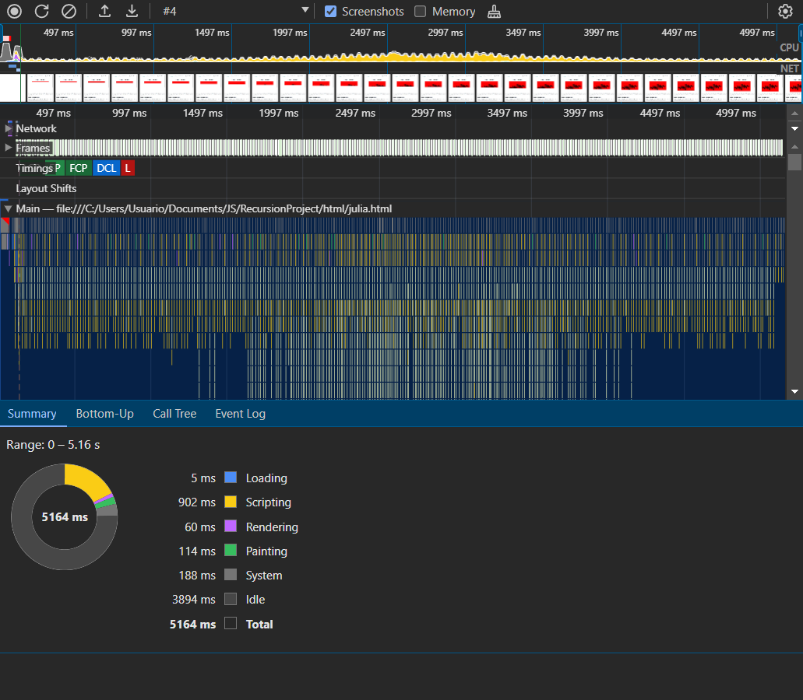

El conjunto de Julia es otro tipo de fractal, similar al conjunto de Mandelbrot, pero con un comportamiento aún más complejo y dinámico. Se define a partir de una función matemática simple y un valor constante "c", lo que genera una gran variedad de formas y patrones.
Función iterativa: Se comienza con un punto "z" en el plano complejo. Se aplica la misma función que en el conjunto de Mandelbrot, pero con un valor constante "c" fijo:
Zn+1 = Zn2 + c
Donde:
Convergencia vs Divergencia: Al igual que en el conjunto de Mandelbrot, se observa el comportamiento de la secuencia de puntos Zn. Si la secuencia converge a un valor finito, el punto "z" se considera parte del conjunto de Julia para el valor "c" elegido. Si la secuencia diverge hacia el infinito, "z" no pertenece al conjunto.
Este código en JavaScript genera una representación del fractal de Julia en un elemento canvas de HTML.
const canvas = document.getElementById('juliaCanvas');
const ctx = canvas.getContext('2d');
const width = canvas.width;
const height = canvas.height;
const max_iter = 256;
const c = { x: -0.7, y: 0.27015 };
function julia(z, c, n = 0) {
if (n >= max_iter) {
return max_iter;
}
const z_next = {
x: z.x * z.x - z.y * z.y + c.x,
y: 2 * z.x * z.y + c.y
};
if (z_next.x * z_next.x + z_next.y * z_next.y > 4) {
return n;
}
return julia(z_next, c, n + 1);
}
function drawJuliaPixel(x, y) {
const min_x = -1.5, max_x = 1.5;
const min_y = -1.5, max_y = 1.5;
const z = {
x: min_x + (x / width) * (max_x - min_x),
y: min_y + (y / height) * (max_y - min_y)
};
const m = julia(z, c);
const color = m === max_iter ? 0 : 255 - Math.floor(255 * m / max_iter);
ctx.fillStyle = `rgb(${color}, 0, 0)`;
ctx.fillRect(x, y, 1, 1);
}
function drawJuliaRow(y) {
if (y >= height) {
return;
}
for (let x = 0; x < width; x++) {
drawJuliaPixel(x, y);
}
requestAnimationFrame(() => drawJuliaRow(y + 1));
}
drawJuliaRow(0);
const canvas = document.getElementById('juliaCanvas');
Selecciona el elemento canvas del DOM.
const ctx = canvas.getContext('2d');
Obtiene el contexto de dibujo 2D para el canvas, que se utiliza para pintar en él.
const width = canvas.width;
const height = canvas.height;
Almacena las dimensiones del canvas para su uso posterior.
const max_iter = 256;
Define el número máximo de iteraciones para cada punto del fractal.
const c = { x: -0.7, y: 0.27015 };
Define la constante compleja c que se utiliza en la fórmula para generar el fractal de Julia. Este valor
es específico para cada tipo diferente de fractal de Julia.
drawJuliaRow(0);
Inicia el proceso de dibujo con la primera fila de píxeles en el canvas.
Se uso la interfaz de la herramienta de desarrollo del navegador Chrome, específicamente la pestaña de "Performance" durante una sesión de perfilado (profile) de rendimiento.
La grabación es de nuevo de alrededor de 5.16 segundos.
5 ms
902 ms, que es el tiempo dedicado a ejecutar scripts, y en este caso, es donde se calcula el fractal de Julia, añadiendo a eso, este fractal es más complejo de renderizar por la complejidad que tiene a comparación del fractal de Mandelbrot.
60 ms
114 ms, que es el tiempo para pintar los resultados en la pantalla.
188 ms, que podría incluir el tiempo de procesamiento que no está directamente relacionado con la página web.
3894 ms, indicando el tiempo en el que el navegador no está procesando ningún trabajo para la página.
Los bloques de colores en la línea de tiempo sugieren una intensa actividad de scripting, posiblemente debido a los cálculos del fractal, seguido por períodos de renderizado y pintado, esto pasa al igual en el fractal de Mandelbrot por las múltiples funciones que se ejecutan dependiendo de las condiciones y de los llamados. La densidad y longitud de estos bloques sugieren que el navegador está dedicando una cantidad considerable de tiempo y recursos a estas tareas.
Reducir la frecuencia de operaciones costosas. Por ejemplo, calcular z.x * z.x y z.y * z.y una vez por iteración y reutilizarlos.
En lugar de dibujar píxeles individuales con fillRect, usar ImageData para actualizar el canvas en bloque. Esto minimiza las operaciones de dibujo y puede mejorar significativamente el rendimiento.
Pre-calcular y almacenar factores y rangos utilizados en las transformaciones de coordenadas dentro de drawJuliaPixel para evitar cálculos repetitivos.
Utilizar requestAnimationFrame de manera efectiva para limitar el número de veces que se redibuja el canvas y garantizar que se dibuje a una velocidad que coincida con el rendimiento del dispositivo.
Mover cálculos intensivos al fondo utilizando Web Workers, permitiendo un procesamiento paralelo y evitando bloquear la interfaz de usuario.
Revisar la lógica de escape en la función julia para ver si se puede optimizar y reducir el número de iteraciones necesarias para determinar si un punto escapa.
Ajustar max_iter según el nivel de detalle y zoom del fractal. A veces, se pueden obtener buenos resultados visuales con menos iteraciones.
Para vistas previas o durante el zoom, usar una resolución más baja y aumentarla para el dibujo final, lo que puede mejorar la respuesta durante la interacción del usuario.